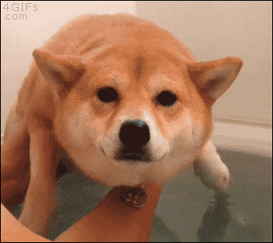
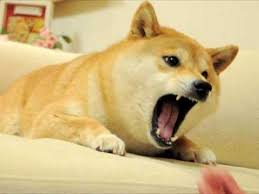
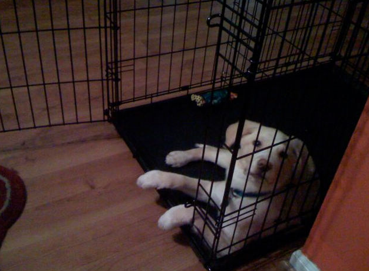
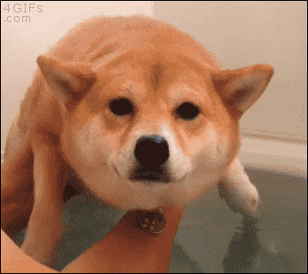
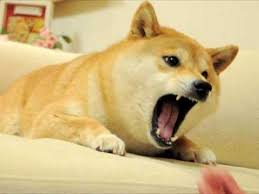
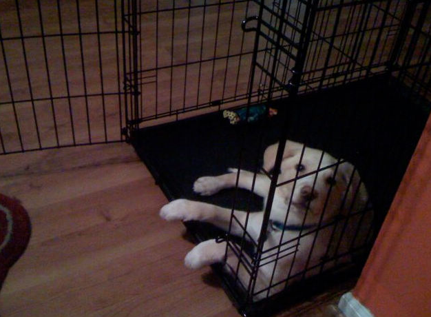

On this page you can find some stuff about me and other cool things.
My name is Nolan Polzin, I attended Lincoln Prairie for 10 years and now I go to Hoffman High.
I play video games for most of my free time. The first game and gaming console i got was an Xbox 360 and i got Halo 3.
One of my most favorite games is Halo Reach, and nowadays I play games like Rust, Fortnite, and Slime Rancher.
I have 2 older brothers who also like to play video games, and a Dog named captain Jack. Jack is a silly dog and is super cute.
SOmething you should know about me is I am super friendly and love to hang out with friends
 




